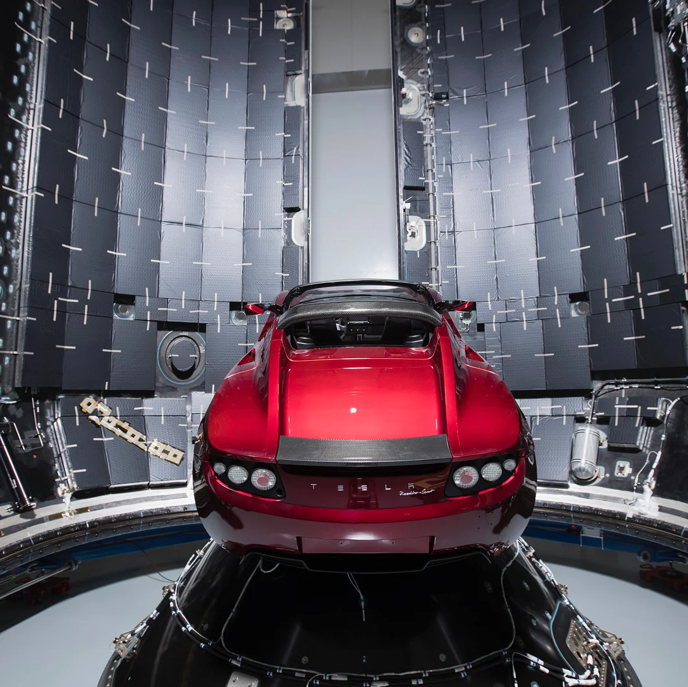

Wendell
Buscar
SpaceX lançou um carro da Tesla no espaço
cinco anos atrás; onde ele está agora?
O Tesla Roadster pessoal de Elon Musk foi lançado no espaço sideral em 2018, na primeira missão do foguete Falcon Heavy.
Já se passou meia década desde que a SpaceX chamou atenção de todo o mundo com a decisão de lançar o Tesla Roadster pessoal de Elon Musk no espaço sideral, enviando o carro em uma jornada sem fim para o deserto cósmico, onde deve permanecer por milênios. Na segunda-feira, o carro esporte cor de cereja completou oficialmente cinco anos no espaço.
Na época desse aniversário, as estimativas de dados mostram que ele completou cerca de três voltas e um quarto ao redor do sol e está posicionado a cerca de 327 milhões de quilômetros da Terra, de acordo com o site de rastreamento whereisroadster.com.
O roadster percorreu mais de 4 bilhões de quilômetros, principalmente através do vácuo estéril. Embora, em 2020, o veículo tenha feito sua primeira aproximação a Marte, passando a 8 milhões de quilômetros do planeta, ou cerca de 20 vezes a distância entre a Terra e a Lua.
É difícil, no entanto, dizer onde o veículo está com absoluta certeza ou determinar se ainda está inteiro, pois é possível que o carro tenha sido danificado ou destruído por um meteoroide ou corroído além do reconhecimento pela radiação. Não houve observações diretas do roadster desde 2018, nas semanas logo após ele ter sido colocado em órbita no topo de um foguete Falcon Heavy de três milhões de libras.
Os dados atuais são baseados apenas em estimativas calculadas da trajetória do carro. Os astrônomos não têm muito incentivo para rastrear ativamente o carro, pois ele não oferece muito valor científico.
